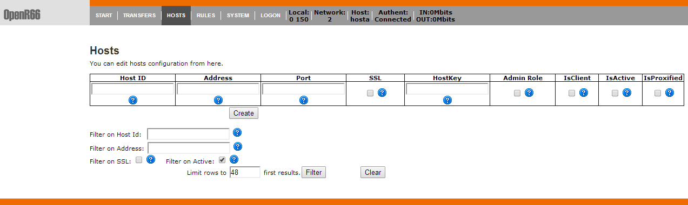
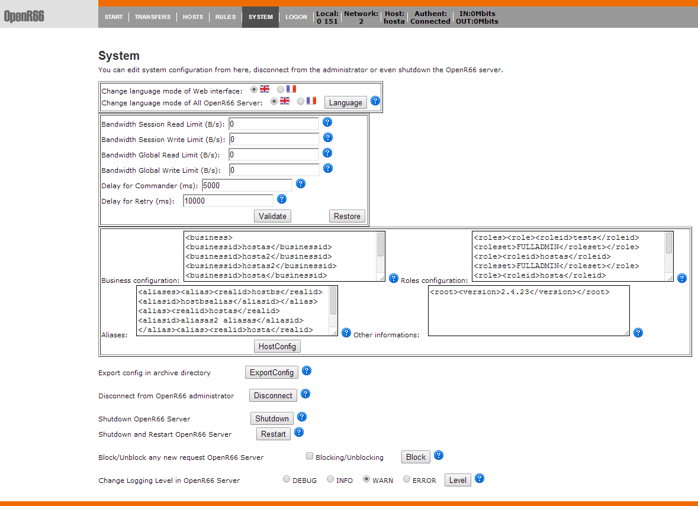

Waarp R66 Server (as Waarp Gateway FTP) comes with an administrator in HTTPS mode with authentication.
Administration support
The administrator allows to take action on transfers (stop, restart, ...), export logs, handle hosts and rules, and some specific internal functions. It is accessed at https://host_address:8067/ (8066 port can be changed in the configuration file, setting it to 0 disabling the administrator). Note the 's' in https. You will need to accept the security concern from your browser (specially if the SSL key is generated by yourself).
Note that it is possible from version 2.4.22 to specify different levels of applicable rights to a user connected to the web administration interface:
The default admin user (specified in the XML configuration file) has all rights (super user account)
It is possible to create new user accounts by creating "dummy" Hosts with a value of PORT < 0 (it will set automatically Address to 0.0.0.0 and isClient to True).
Then, you can specify the roles by either setting isAdmin to True (equivalent to super user account), or by setting the ROLES item to the values decided:
<roles><role><roleid>username</roleid><roleset>roles to set</roleset></role></roles>
Where roles to set could be:
TRANSFER: allow to access to CANCEL-RESTART sub menu of TRANSFERS menu
SYSTEM: allow to access to EXPORT sub menus of TRANSFERS menu and to all functions of SYSTEM menu
CONFIGADMIN: allow to access to HOSTS and RULES menu
By default, all other menus are allowed (LISTING and SPOOLED DIRECTORY sub menus of TRANSFERS menu, LOGON and START menus) since they do not act on the server. Note that SYSTEM menu will be limited to showing the current values (not changing them), except the Web interface language (not the server language).
You can combine rights, for instance by setting <roleset>TRANSFER SYSTEM</roleset> for the role, or any combination.
Internationalization of the Web interface (and the server and client) is now fully supported from version 2.4.22:

Here are some pictures from the administrator:
The Logon screen

The Start screen

The Transfers main screen

The Transfers Listing screen

The Cancel-Restart Transfer screen

The Hosts Screen

From this Hosts Screen, one can block a partner (IsActive) or specify that this partner is proxified (no IP checking will be done).
The Rules screen

The System screen

It is possible to "block" or "unblock" new requests, such that someone can wait that all current requests are over to shutdown his/shis Waarp server without interrupting requests.
One can change the language support, separately for Server and Web interface. One can also change dynamically the LOG level of the server.
The Special Configuration fields (System menu)
Business
Each host name specified here will have the ability to make business request (special Java Class to handle B2B functionalities). This information could be passed through the XML configuration file or through the Business field of the Host configuration in the database (System Menu). The format is:
- <business><businessid>id1</businessid><businessid>id2</businessid>...</business>
Roles
If specified for one host, this will override database roles. By default, local server should be added as role = FULLADMIN in XML file. This information could be passed through the XML configuration file or through the Roles field of the Host configuration in the database (System Menu). The format is:
<roles><role><roleid>id1</roleid><roleset>rolesSet</roleset></role>...</roles>
Where idx is an host id (1 by 1) for which you require to override default database roles
Where rolesSet is a set of roles, with separators as blank or '|'
The roles assign to this host between NOACCESS, READONLY, TRANSFER, RULE, HOST, LIMIT, SYSTEM, LOGCONTROL, PARTNER(READONLY,TRANSFER), CONFIGADMIN(PARTNER,RULE,HOST), FULLADMIN(CONFIGADMIN,LIMIT,SYSTEM,LOGCONTROL)
Example: PARTNER|LOGCONTROL
Aliases
This will allow alias usage for host ids. This information could be passed through the XML configuration file or through the Aliases field of the Host configuration in the database (System Menu). The format is:
<aliases><alias><realid>realId</realid><aliasid>aliasSet</aliasid></alias>...</aliases>
Where realId is the real host id that will have aliases (locally defined).
Where aliasSet is a set of alias, with separators as blank or '|'
Example: alias1|alias2
Other
Such containt will allow any of the ids id1, id2, ... or idn to see, once connected to the administration web interface, the full content of the database from the transfer menu. Note however that those ids need to have also the CONFIGADMIN role since this ability has to be controlled (see Roles item to see how to configure the roles).
By default, this field contains the <root><version>version</version></root> xml information, handle by Waarp to check the database configuration version compared to the Waarp program, in order to allow automatic update.
Note that automatic update could be prevented by setting in XML configuration file <db>dbcheck>False</dbcheck>...</db> or through Java property -Dopenr66.startup.dbcheck=0
In case the database is shared among several R66 servers, to be able to see all transfer logs from the Administration Web interface, you need to set a special option in the "Other informations" with the identifier tha will be used to connect to this web interface.
<root>...<seeallid>id1,id2,...,idn</seeallid></root>